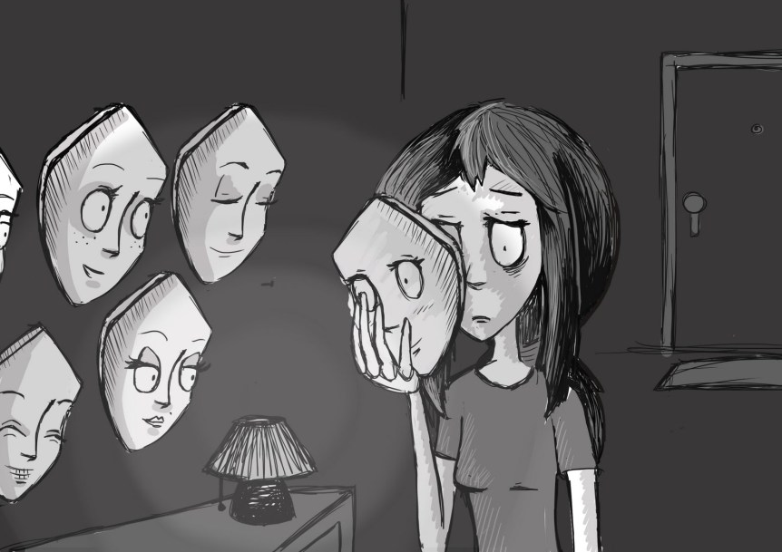

MENTAL HEALTH
I am fine
Many of us are familiar with the question
“How are you?” and offcourse we respond automatically with “yeah fine, thanks” not because we are fine. Its the response we taught in default.
And the problem is we don’t always know how we are.

Struggling with emotions
Identifying feelings is really difficult.sometimes we might feel a person in certain situations .But it seems to be a struggle .when we try to apply or relate to a particular circumstances.
Sometimes we pretend to be busy ,To cope with the fact that we don’t have to think about how we feel. It might feel so difficult when we don’t want to admit things to ourselves.
Life can get busy
We don’t have the time, energy, or brain space to work out how we feel nevermind to communicate with those feelings. Its okay to get ourself out of things which don’t matters.
Mixture of feelings
Life is rarely smooth.We manage to come up with tricky questions, Can we average emotions? Not literally. Being okay doesn’t accurately explain how we are. Offcourse ,it glosses too many things.
Herecomes Mental health
And thus in this world of glossing it becomes necessary to maintain a good mental health. Research shows that high levels of mental health are associated with increased learning,productivity and creativity.
Mental health includes our emotional, psychological, and social well being. It affects how we think, feel, and act. It also helps determine how we handle stress and make healthy choices. Therefore ,nowadays mental health become a basic necessity at every stage of life from childhood and adolescence through adulthood.
Mental disorders
Mental disorders refers are conditions that affect your thinking, Feeling, mood and behavior. They can affect the ability to relate to others and function each day.
It includes anxiety disorders, panic disorder ,depression, eating disorders, personality disorders, psychotic disorders
Mental health maintenance
Overcome stress
Stress is often unavoidable, but knowing what triggers your stress and specializing to cope with is the key in maintaining good mental health.
As said earlier its okay to be busy, try to manage your responsibilities and worries by making a schedule of when you can resolve each issue.
Often it’s a best way to break your worries into writings. It make you realize that they are manageable. Try to avoid dumping in head .
Do what you love
Try to make time for doing fun stuffs that you enjoy doing. We will become a irritable person if we try doing the routine without any self care stuffs. It may include a walk, write up, loafs and even doing things for others.
Do things for others
Helping others is not just good for the people you are helping ; its good for you too. Helping someone can help with your self esteem. Feeling as though you are part of a community is a really important part of your mental health.
Stay Active
Activity and exercise are essential in maintaining good mental health. Being active not only gives you a sense of achievement, but it also boosts the chemicals in your brain that help you put you in a good mood.
You don’t need to run a marathon or play a day of football. A short walk or some gentle activity might do the trick.
Eat well
Eating well is not just important for our bodies, but it is also important for our minds. I often agree with “Good food is a good mood”. Since certain mineral deficiencies such as iron, mineral and vitamin B12 can give us a low mood. Therefore, try to maintain a balanced diet inorder to maintain good mental health.
Just snooz
Sleep is realy important for our physical and mental health. Sleep helps to regulate the chemicals in our brain that transmit information. These chemicals in our brain are important in managing our emotions. If we don’t get enough sleep, we can start to feel depressed or anxious.
Blogging
Ali Mattu, phd, a clinical psychologist at the colmbia university clinic for Anxiety and Related disorder says hat blogging or journaling can help hip away the stigma of mental illness.
Esteem your thoughts
Always choose to prioritize your job. Know that you are safe, worthy and loved. And your problems wont define you.
And remember that growth is often uncomfortable, messy and with the feelings you were not expecting,but believe that its necessary.
No one on earth has the power to dim your light. You are here for a higher purpose .Heal and shine that beautiful light inside of you.
Created By
AUTHOR
Created by AMIRTHAVARSHINI S(Web developer and content writer of Confluenceinfotechsolutions(CIS)
More details